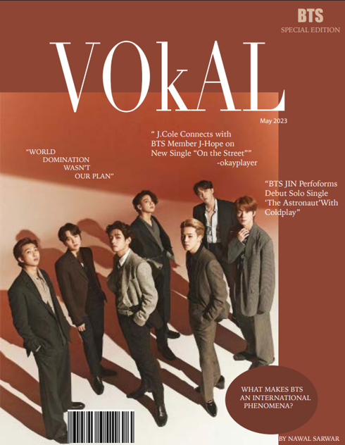
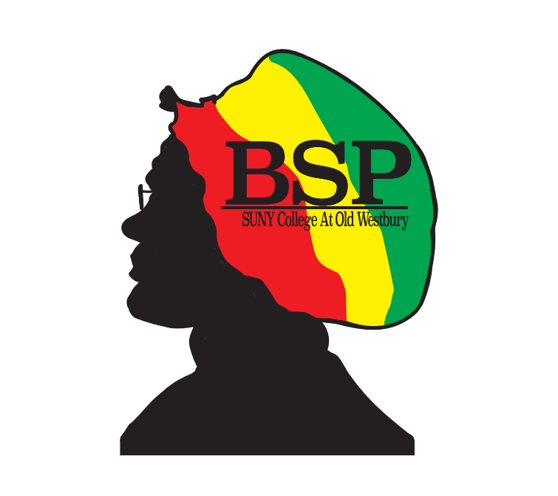

Creative Work
Magazine / Editorial Redesign
Layout redesign exploring typography hierarchy, spacing, and a modern luxury feel.
Logo / Visual Identity
Designed a visual identity (logo) for a new college program that communicates professionalism, creativity, and adaptability.
Crochet / Handmade Design

Pattern-led projects documenting design iterations, color choices, and process.